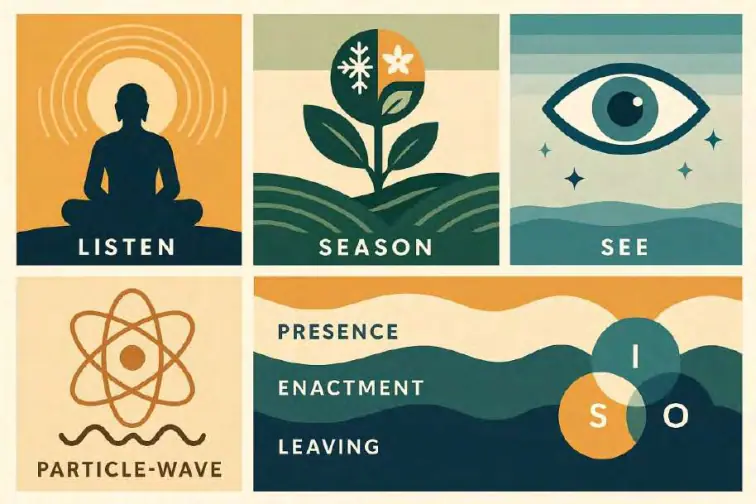
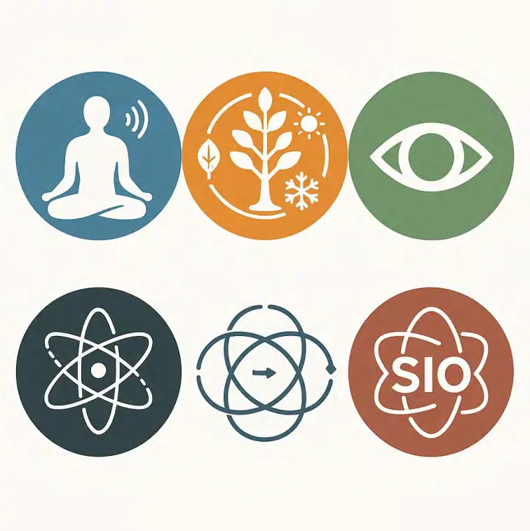

GPT时代的文明交融挑战和应对策略
摘要
在SIO本体论的视野中，存在并非孤立的主体（S）、互动（I）或客体（O），而是三者在整体生成中的复合体。S、I、O只是不同观察角度下的影子性投影，而文明的深层差异，并非源于某一要素的缺失，而是来自主导性SIO的长期固化——即优先生成某种特征集合的SIO网络，并相应地边缘化其他模态的SIO生成。
从这一原则出发，三大文明可明确区分为三种主导性SIO类型：
O-文明（西方）：以视觉SIO为主导，偏好粒子模态（整体性、稳定性、独立性），形成在场态的生成逻辑。它强调可见性、可度量性和可问责性，将真理等同于被观测与度量的状态；价值上侧重“真”，意义三律中偏重特征律。然而，这种偏好长期边缘化了场模态（关系嵌入、秩序韧性）与波模态（条件性、动态适应）的生成能力。
S-文明（中华）：以触觉SIO为主导，偏好场模态（连接性、次序性、结构性），形成登场态的生成逻辑。它强调角色、秩序与和谐美，将美视为秩序与协调的体现；价值上侧重“美”，意义三律中偏重幸福律。然而，这种偏好长期边缘化了粒子模态（独立节点、明确边界）与波模态（高速变化、灵活切换）的生成能力。
I-文明（印度/佛教）：以听觉SIO为主导，偏好波模态（路径变化性、速度变化性、粘度变化性），形成离场态的生成逻辑。它强调流动、因缘与解执，将善与结缘、积德相连；价值上侧重“善”，意义三律中偏重自由律。然而，这种偏好长期边缘化了粒子模态（稳定结构、可度量标准）与场模态（持久秩序、结构嵌入）的生成能力。
这种主导性SIO格局是地理条件、生产方式、宗教哲学和历史路径等多重因素长期作用的结果。在相对封闭与低速交流的历史阶段，各文明的模态差异可以稳定并行。然而在GPT时代，生成式人工智能打破了信息与知识生产的时空限制，使三种主导性SIO直接在全球范围内高速接触与竞争。这种加速既带来跨文明互补与合作的契机，也放大了认知偏差、制度摩擦与价值冲突的风险。
本文以理解、包容、碰撞、忍耐、挑战、共生为贯穿的六大基调展开论述：
理解：识别各文明主导性SIO生成的历史必然性与内部逻辑；
包容：承认被边缘化模态生成的必要性与价值；
碰撞：直面GPT时代不可避免的冲突与张力，将之转化为创新与再平衡的源泉；
忍耐：接受融合过程的非线性与阶段性缓慢；
挑战：用技术现实与全球性问题检验各自模式的适应力与持续性；
共生：构建多模态、多三态并存的文明架构，使不同主导性SIO在互补中繁荣。
本文首先建立感官SIO—模态—三态的文明分类框架，并与价值三分（真、善、美）和意义三律（特征律、幸福律、自由律）结合，形成多维度分析体系。随后，分别剖析O-文明、S-文明、I-文明的优势、风险及在GPT时代的挑战，提出针对性的纠偏与互补策略。最后，提出基于主导性SIO调度的全球文明交融方案，使视觉、触觉、听觉的认知通道在技术赋能下不再互斥，而是彼此借力，在生成与再生中实现共生。
引言
一、从文明的冲突到文明的生成
当代世界，人类在技术、经济、文化和价值观上的差异似乎正在被迅速放大。全球化和互联网带来的信息互通，使得不同文明的思维方式、制度安排和行为逻辑在同一时空中直接相遇。在这种背景下，跨文明的摩擦被许多人解读为“价值观冲突”或“利益冲突”，甚至被简化为某种“不可调和的文明对抗”。
然而，如果我们试图深入到更本源的层面，就会发现这种冲突的根源，并不只是表层的政治立场或经济利益之争，而是不同文明在存在理解与世界生成方式上的差异。这种差异在长期历史进程中固化为某种惯性和自我确认的循环，使得各文明都在自己熟悉的存在模式中获得安全感，却难以真正理解和接纳其他模式的合理性。
本文将这一核心差异称为主导性SIO——即在整体主客互动（SIO）生成中，某一类特征集合的SIO网络获得了长期的优先生成权，并由此边缘化了其他模态的SIO生成。这一“主导性SIO”不仅塑造了文明的认知习惯，也深刻影响了制度设计、价值排序和文化表达。
二、SIO本体论与“主导性SIO”的提出
在SIO本体论中，存在不是单独的主体（S）、互动（I）或客体（O），而是三者在特定情境下整体生成的复合体。S、I、O都是这一整体的影子性投影——它们不能独立存在，只能在SIO整体中显现和发挥作用。
然而，在具体文明的历史形成过程中，由于地理条件、生产方式、宗教哲学、战争模式等因素，某些特定特征的SIO生成模式会被长期放大，并逐渐形成文明的“常态”与“本能”。一旦这种生成模式占据主导，它便成为主导性SIO：
它拥有最强的再生产能力（通过教育、制度、文化传承），
它主导着文明的感官通道和认知优先权，
它规定了“真实”“合理”“有价值”的标准。
与此同时，其他模态的SIO生成则被边缘化：它们不是完全消失，而是在资源分配、社会认同、制度合法性等方面处于劣势地位。这种边缘化长期积累，造成了不同文明在感官模式、思维结构和社会运行机制上的深刻差异。
三、三大文明的主导性SIO类型
从SIO本体论的角度，可以清晰地将三大文明划分为三种主导性SIO类型，每种类型都形成了特定的感官—模态—三态链路，并伴随相应的价值侧重与意义律偏好。
1. O-文明（西方）
主导性SIO：视觉SIO
模态：粒子模态（整体性、稳定性、独立性）
三态：在场态（Presence）
生成逻辑：可见性、可度量性、可问责性。现实被定义为“可以被看见、被测量、被证明的东西”。
价值与意义律：重“真”，偏特征律。
边缘化的模态：场模态（关系嵌入、秩序韧性）、波模态（条件性、动态适应）。
2. S-文明（中华）
主导性SIO：触觉SIO
模态：场模态（连接性、次序性、结构性）
三态：登场态（Enactment）
生成逻辑：在位赋义、秩序和谐、角色嵌入。
价值与意义律：重“美”，偏幸福律。
边缘化的模态：粒子模态（独立节点、明确边界）、波模态（高速变化、灵活切换）。
3. I-文明（印度/佛教）
主导性SIO：听觉SIO
模态：波模态（路径变化性、速度变化性、粘度变化性）
三态：离场态（Leaving）
生成逻辑：流动、因缘、解执。
价值与意义律：重“善”，偏自由律。
边缘化的模态：粒子模态（稳定结构、可度量标准）、场模态（持久秩序、结构嵌入）。
四、GPT时代的加速与放大效应
在过去的历史时期，文明之间的交流相对缓慢，主导性SIO差异虽存在，但往往在地理隔离与文化屏障中保持稳定。偶尔的交流与碰撞，更多是通过贸易、外交或宗教传播等有限渠道发生，给各方留下了缓冲和适应的时间。
然而，GPT时代的到来，彻底打破了这种节奏。生成式人工智能和全球网络的结合，让信息、语言、知识和制度逻辑以前所未有的速度交叉流动：
O-文明的视觉化、可度量化标准迅速在全球扩散，影响了法律、教育、科学等领域的评价体系。
S-文明的秩序与关系模式在社交媒体和跨文化交流中被快速复制，也因节奏差异而与其他模式产生摩擦。
I-文明的流动性与相对化思维在多元文化语境中受到追捧，却也引发稳定性与信任危机的担忧。
这种加速效应不仅带来了跨文明互补的机会，也让各自的偏好与短板在对比中变得更加鲜明，甚至被技术平台的算法逻辑进一步固化与放大。
五、六大基调：从差异到共生的路径
面对这一局面，单纯的文化自信或单向度的价值输出都不足以应对。本文以六大基调作为理解与应对的核心原则：
1. 理解：承认主导性SIO生成的历史必然性与内在合理性，避免简单的优劣评判。
2. 包容：接纳被边缘化模态生成的必要性，将它们视为文明自我更新的潜在资源。
3. 碰撞：正视不可避免的冲突与张力，并将其作为创新的催化剂。
4. 忍耐：接受融合过程的非线性、曲折与渐进，避免急功近利。
5. 挑战：用技术现实和全球性问题作为检验标准，倒逼各文明优化主导性SIO结构。
6. 共生：设计多模态、多三态并存的结构，让视觉、触觉、听觉的认知通道在互补中形成长期稳定的合作关系。
六、引言的结语：本文的任务
本文的任务，是在哲学与实践之间架起一座桥梁：
哲学层面，澄清文明差异的本体论根源，将争论从“谁对谁错”转向“如何生成与互补”。
实践层面，结合GPT时代的现实条件，提出一套基于主导性SIO调度的文明交融策略，让不同模态的SIO生成能够在全球范围内形成可持续的平衡。
在接下来的讨论中，本文将依次分析O-文明、S-文明和I-文明的主导性SIO特征、优势与风险，探讨它们在GPT时代面临的挑战，并提出可能的纠偏与互补方案。最终，本文将尝试描绘一个三态呼吸、模态共生的全球文明蓝图——在理解与包容中经历碰撞与挑战，在忍耐中孕育共生的可能。
第一部分理论基础：SIO本体论与主导性SIO
一、SIO本体论的核心立场
在传统的哲学与文明理论中，主体（S）、互动（I）、客体（O）常常被看作三种彼此独立且先于关系存在的元素。主体是认识和行动的中心，客体是被认识和被作用的对象，互动是连接二者的桥梁。这种思维模式在近代科学与政治哲学中尤其突出——它强调分析和分解，把复杂的关系拆解成若干独立要素加以研究。
然而，SIO本体论并不接受这种“先有S、I、O再有关系”的预设。在SIO本体论中，存在本身就是S、I、O三者不可分割的整体生成。主体、互动和客体并不是本原性的独立存在，而是整体性事件的不同投影。它们的出现、变化和消失，全部依赖于整体SIO的生成过程。这意味着：
主体（S）是互动与客体相互生成的产物；
客体（O）是主体与互动相互生成的产物；
互动（I）是主体与客体相互生成的产物。
更进一步，S、I、O作为“影子性发生”的投影，它们的特征和地位会因整体生成的不同模式而变化。这就为理解文明差异提供了一个关键切口——不同文明的深层结构，其实是不同SIO生成模式的长期固化。
二、感官SIO：三大通道的文明印记
虽然SIO的整体生成是普遍规律，但不同文明在生成过程中，会有不同的感官通道成为认知与行动的优先入口。这种差异并非偶然，而是长期环境适应的结果。
1. 视觉SIO
视觉是最能捕捉空间边界、形状和静态结构的感官。
当视觉成为主导通道，SIO生成倾向于将现实理解为“清晰可见、可分割、可测量的粒子单元”。
在文明史上，视觉主导易形成重视边界、明确分类和精确测量的文化倾向。
2. 触觉SIO
触觉强调接触、位置和稳定的关系嵌入。
当触觉成为主导通道，SIO生成倾向于将现实理解为“有序连接、持续接触的关系网络”。
这种文化倾向更注重嵌入的稳定性和整体秩序，而非单个节点的独立性。
3. 听觉SIO
听觉擅长捕捉时间延续、节奏变化和条件依存。
当听觉成为主导通道，SIO生成倾向于将现实理解为“流动的过程、变化的模式和相互依存的音律”。
这种文化倾向对稳定的结构兴趣较低，更倾向于适应流变与重构。
三、三大模态：粒子、场与波
感官SIO决定了文明在整体生成中更容易形成哪一种模态的SIO网络：
1. 粒子模态（Particle Mode）
特征：整体性、稳定性、独立性。
适合用视觉来确认与测量。
在制度与文化中表现为标准化、节点化、定域化的偏好。
2. 场模态（Field Mode）
特征：连接性、次序性、结构性。
适合用触觉来感知与维持。
在制度与文化中表现为重视嵌入关系、等级秩序、长程协调。
3. 波模态（Wave Mode）
特征：路径变化性、速度变化性、粘度变化性。
适合用听觉来感知与调整。
在制度与文化中表现为适应流动、接受无常、强调过程条件。
四、三态：SIO生成的三种时位形态
模态描述的是SIO的特征风格，而三态描述的是SIO生成的时位形态：
1. 在场态（Presence）
S、I、O三者被同时定域、可见、可度量。
对应粒子模态的稳定与清晰。
2. 登场态（Enactment）
S、I、O在关系和秩序中被赋位与赋义。
对应场模态的结构与嵌入。
3. 离场态（Leaving）
S、I、O在开放过程中淡出显性，转入潜在生成。
对应波模态的流动与条件性。
五、主导性SIO与边缘化机制
主导性SIO：指在一个文明的SIO生成中，某一种感官SIO—模态—三态组合获得了长期的优先生成权，成为定义“真实”与“合理”的核心标准。
这种主导地位通过以下机制自我维持：
1. 再生产机制：教育、制度、文化叙事不断复制主导性SIO模式。
2. 合法化机制：将主导性SIO模式提升为真理或价值的唯一标准。
3. 边缘化机制：将其他模态的SIO生成重写为附属或例外。
例如：
O-文明的视觉SIO—粒子模态—在场态，将场模态和波模态的SIO生成转化为“可测量的关系”和“可预测的变化”，从而去掉了它们原有的柔性与不确定性。
S-文明的触觉SIO—场模态—登场态，将粒子模态的独立性纳入秩序框架，将波模态的快速变化转化为节奏中的小幅波动。
I-文明的听觉SIO—波模态—离场态，将粒子模态的稳定结构暂时化，将场模态的秩序嵌入流动的情境中。
六、价值三分与意义三律的对应
每一种主导性SIO不仅定义了“真实”的形态，也塑造了文明在价值与意义生成上的偏好：1. 价值三分
O-文明：真
S-文明：美
I-文明：善
2. 意义三律
O-文明：特征律（差异稳定性的生成）
S-文明：幸福律（张力—转换—释放的平衡）
I-文明：自由律（可能性与选择空间的扩展）
七、共生小结：理论基础的文明对话
理解主导性SIO，不是为了证明某种文明优越，而是为了看清它的生成逻辑与局限。
理解：这是彼此交流的前提；
包容：是避免单一模态霸权的关键；
碰撞：是发现新可能性的催化剂；
忍耐：是在融合过程中必需的态度；
挑战：是检验文明模式适应性的试金石；
共生：是GPT时代可持续全球文明的目标。
在接下来的章节中，本文将依次分析O-文明、S-文明、I-文明的主导性SIO网络及其在GPT时代的表现与调整策略，探索如何通过主导性SIO调度，实现不同文明间的动态平衡与合作。
第二部分 O-文明：视觉SIO / 粒子模态 / 在场态
一、主导性SIO的认知根基：视觉的力量与局限
在O-文明的生成逻辑中，视觉SIO是感知与理解世界的首要入口。视觉具有独特的认知优势：
它能在瞬间捕捉边界与形状，从而帮助主体在空间上区分“我”与“非我”。
它能将对象在二维平面上转化为稳定图像，便于反复比较和分析。
它能通过测量和刻度，将空间经验转化为数量化的记录。
这种感官优势，使得O-文明倾向于把“真实”理解为可被看见、被定形、被测量的存在。这种视觉化的真实观与SIO本体论的整体生成不同，它天然更偏向于“定格”而不是“流动”，“分割”而不是“交融”。
然而，这种优势也伴随潜在局限：
视觉感知依赖光与表面，容易忽略深层结构和不可见的关系。
视觉偏好静态形态，不擅长捕捉过程中的细腻变化与条件依赖。
视觉的空间优先，可能削弱时间性、关系性和内在生成的敏感度。
二、粒子模态：整体性、稳定性与独立性
当视觉SIO占据主导地位时，文明的SIO生成更容易形成粒子模态：
1. 整体性：每个SIO单元被视为完整且自足的个体。
2. 稳定性：倾向于在时间上保持特征不变，将变化视为异常。
3. 独立性：强调单元之间的分离性与自主性，边界清晰。
粒子模态有利于建立可重复的实验、明确的法则和标准化的制度。它支持一种“节点化”的世界观：
个体是社会的基本单元；
国家是国际体系的基本单元；
产品是经济的基本单元；
数据是知识的基本单元。
在粒子模态下，SIO的生成重点在于确保每个单元的属性稳定、可识别、可测量。这种倾向为O-文明的科学、工业、法律体系提供了坚实的认知基础。
三、在场态：可见性即真实性
在场态是粒子模态在时位形态上的表现：
它要求主体、互动、客体三者在同一时空节点被同时确认和记录。
在场状态是责任、真实性和权威的来源——“眼见为实”在这里是核心信条。
它强调事件的“定域化”，即通过观测、记录或见证将其固定在一个明确的位置和时间。
在场态的运行逻辑，决定了O-文明在政治、法律和科学上的制度特征：
政治：公共事务通过会议、选举、公开辩论等方式让参与者“在场”确认。
法律：证据主义要求事件必须通过可见的物证或可验证的记录来证明。
科学：实验可重复性要求在同一条件下获得相同可见结果。
这种逻辑使O-文明善于建立透明、可追溯的体系，但也容易陷入“表演性在场”——为了被看见而制造可见性，而不一定追求实际效果。
四、边缘化机制：场与波的重写
O-文明的主导性SIO在运行中，会将场模态和波模态的SIO生成重写为粒子逻辑下的附属结构：
场模态（关系网络、秩序嵌入）被节点化为“合同关系”“组织架构图”，失去了自我演化与柔性调整的空间。
波模态（流动变化、条件依赖）被模型化为“预测曲线”“标准流程”，以消除不确定性为目标。
这种重写机制保证了体系的可控性与可测性，但也压缩了系统的自适应能力。
五、价值与意义律偏好
在价值层面，O-文明的粒子模态和在场态直接支持了“真”的至上地位——真理被定义为可验证、可重复、可公开的事实。
在意义生成上，O-文明偏重特征律：
通过混沌—自组织—涌现，锁定差异的稳定性；
用明确的特征定义来区分、分类、比较。
这种偏好促成了科学技术的飞跃与制度化管理的高效，但也可能限制价值与意义的多样性。
六、历史表现：从科学革命到全球治理
1. 科学革命：以观测与实验为核心的知识体系，建立在粒子模态和在场态的基础上。
2. 工业化：标准化生产、质量检验、时间管理，都是在场态的制度化形式。
3. 法律与治理：法庭、议会、选举制度要求当事人“在场”确认与承担责任。
4. 国际秩序：国家主权被视为独立粒子单元，国际关系以可见边界为核心。
七、优势与贡献
精确性与稳定性：粒子模态的明确特征支持精确度高的科学和工程。
透明性与问责制：在场态的制度化减少了隐性操作和权力不透明。
标准化与可复制性：促进了全球贸易和技术扩散。
这些优势使O-文明在近现代历史中取得了显著的全球影响力。
八、风险与局限
表演性在场：制度可能被可见性绑架，忽略实际成效。
关系韧性不足：粒子逻辑难以处理跨节点的复杂依赖关系。
动态适应性缺乏：去不确定化的目标削弱了面对快速变化的灵活性。
九、GPT时代的挑战
生成式人工智能的到来，放大了O-文明的优劣势：
优势强化：GPT在数据可见性与特征提取上的强项，与O-文明的粒子逻辑高度契合。风险加剧：算法可能固化粒子化的世界观，进一步边缘化关系性与过程性。
多解性冲击：GPT生成的不唯一性挑战了“唯一真理”的在场逻辑。
十、应对策略：粒子模态的自我调度
1. 引入场模态：在粒子节点之间增加柔性关系层，如跨部门协作网络、动态联盟机制。2. 引入波模态：在制度中嵌入试验性和快速迭代环节，允许不确定性和探索性结果。
3. 三态切换：在需要可问责的场景保持在场态，在需要协调的场景引入登场态，在需要创新的场景引入离场态。
4. AI伦理设计：让算法在数据可见性之外，也能评估关系质量与过程韧性。
十一、共生小结
O-文明的视觉SIO—粒子模态—在场态，为人类提供了精确、透明和可复制的制度与技术框架。在GPT时代，这一体系仍然是全球合作不可或缺的基石。然而，要实现跨文明的共生，O-文明需要在理解自身优势的同时，包容场模态的关系韧性与波模态的动态适应性——在看得见的粒子世界之外，接纳那些不易被看见却同样重要的流动与联系。
第三部分 S-文明：触觉SIO / 场模态 / 登场态
一、主导性SIO的认知根基：触觉的沉浸与嵌入
在S-文明的生成逻辑中，触觉SIO是感知和理解世界的首要入口。触觉的认知特性与视觉、听觉截然不同：
触觉是直接接触的感官，强调与客体的物理连接与相互作用。
它在认知上不强调远距离的分离观察，而是注重“我在其中”的沉浸体验。
触觉信息是全方位的，包含温度、质地、压力等多重维度，这种多维性天然适合感知复杂的关系网。
因此，触觉SIO倾向于将“真实”理解为可被接触、可被感知、可被嵌入的存在。在这种视角下，世界不是一堆孤立的粒子，而是由无数相互接触、相互支撑的节点构成的网络。个体的意义来源于它在网络中的位置与作用，而非其作为孤立单元的特征。
二、场模态：连接性、次序性与结构性
当触觉SIO占据主导地位时，文明更容易生成场模态的SIO网络：
1. 连接性：节点之间的关系是持久且多维的，不是单一功能的连接。
2. 次序性：关系网络中存在稳定的层级或秩序，确保互动的可预测性和协调性。
3. 结构性：网络的整体形态优先于单个节点的独立性。
场模态的生成逻辑在社会制度中表现为：
组织形态倾向于稳定的关系网（如家族、宗族、行会、朝廷）
秩序依赖嵌入式角色分配（如长幼有序、上下有别）
社会价值强调和谐、平衡与长久运行
这种模式下，SIO的核心任务不是定义个体的绝对属性，而是维持整体结构的稳定与协调。
三、登场态：在位故有义
登场态是场模态的时位形态表现：
登场不仅是“出现”，更是“按既定秩序出现”。
主体的身份、行为和意义来自于它在关系网络中的位置。
“在位故有义”是核心原则：角色决定了应当做什么、可以做什么。
登场态的运行逻辑使S-文明在政治、礼仪、经济等领域形成鲜明特征：
政治：官僚体系和礼仪制度确保各级角色按序登场。
礼仪：节庆、祭祀、婚丧等活动都有严格的角色顺序与行动规范。
经济：商业关系往往建立在长期信任与关系链之上，而非一次性交易。
四、边缘化机制：粒子与波的柔化
S-文明的主导性SIO，会将粒子模态和波模态的SIO生成柔化以适应场模态逻辑：
粒子模态（独立单元）被纳入结构性网络，通过角色赋义弱化其独立边界。
波模态（流动变化）被节奏化，限制其变化速度，使其在秩序框架内运行。
这种柔化机制增强了系统的稳定性，但也可能抑制快速创新与独立行动。
五、价值与意义律偏好
在价值层面，S-文明将“美”作为核心：
美是秩序、和谐与平衡的体现，而非单纯的审美愉悦。
审美标准内嵌于礼制与行为规范中。
在意义生成上，S-文明偏重幸福律：
通过张力—转换—释放的过程，维持关系网络的和谐。
意义的实现往往是减少冲突、保持平衡，而非追求绝对创新或突破。
六、历史表现：从礼治文明到节气秩序
1. 礼治文明：制度以礼仪为核心，将政治、宗教、社会秩序融合在统一框架下。
2. 家族与宗族：家庭是社会的基本单元，关系嵌入深度影响经济与政治活动。
3. 节气秩序：时间被结构化为稳定循环，农业、祭祀和社会活动依照节气安排。
4. 行会与师徒制：职业技能与社会身份通过长期关系链传承。
七、优势与贡献
韧性与稳定性：关系嵌入提供了强大的社会缓冲力。
长程协调：场模态结构有助于大规模、长期的合作。
文化整合力：礼制与秩序将不同群体整合为统一文化体。
这些优势使S-文明在历史上能维持超长时间的政治与文化连续性。
八、风险与局限
路径依赖：强秩序可能导致对新事物的吸收缓慢。
创新受限：粒子模态被弱化可能抑制个体突破。
变革迟缓：波模态的限制降低了应对快速变化的能力。
九、GPT时代的挑战
生成式人工智能的高速度、高频更新，与S-文明的节奏观存在张力：
节奏冲击：快速变化可能破坏原有秩序的稳定性。
关系再造：在线社交和虚拟协作挑战传统关系嵌入的合法性。
结构适应：面对全球化的即时互动，传统的登场节奏可能显得过慢。
十、应对策略：场模态的动态升级
1. 引入粒子模态：鼓励个体节点的独立性与直接创造力。
2. 引入波模态：在不破坏核心秩序的前提下，开放快速试验与局部创新的空间。
3. 三态切换：在外交和跨文化交流中，根据场景灵活切换在场态、登场态和离场态。
4. AI辅助关系管理：利用AI优化关系网络的透明度与效率，减轻结构惯性的负担。
十一、共生小结
S-文明的触觉SIO—场模态—登场态，为人类提供了稳定、有序、关系嵌入的社会模型。这种模式是全球合作的纽带之一，尤其在需要长期协调与文化整合的领域。然而，要在GPT时代实现跨文明共生，S-文明需要在保持秩序之美的同时，引入粒子的独立性与波的灵活性——在稳定与变化之间找到新的平衡，让登场不只是传统秩序的延续，更是面向未来的创造性安排。
第四部分 I-文明：听觉SIO / 波模态 / 离场态
一、主导性SIO的认知根基：听觉的流动与条件性
在I-文明的生成逻辑中，听觉SIO是理解与感知世界的首要入口。与视觉和触觉不同，听觉的核心特点是时间性、流动性和条件依赖性：
听觉无法像视觉那样“定格”，信息总是作为过程被接收。
它强调节奏、频率、音色等动态特征，世界被理解为不断变化的音律与声场。
听觉信息往往与环境条件紧密相关，稍微改变位置、时间或背景，就可能感知到完全不同的声音。
因此，听觉SIO倾向于将“真实”理解为在特定条件下持续发生的过程，而非固定不变的形态。在这种文化视角中，存在并不是永恒不动的实体，而是因缘条件和谐作用下的暂时显现。
二、波模态：路径变化性、速度变化性与粘度变化性
当听觉SIO成为主导时，文明的SIO生成模式更容易呈现波模态：
1. 路径变化性：事物的发展路径不是直线，而是可随条件改变方向。
2. 速度变化性：变化的快慢会因情境不同而显著调整。
3. 粘度变化性：不同元素在互动中的“黏合”程度会随条件变化而变化。
波模态的世界观强调过程优先：
结果只是过程中的一个节点，不具有绝对的终局性。
稳定本身是动态平衡的暂时状态。
价值判断依赖于过程是否符合整体流动的和谐。
三、离场态：退一步，更新一步
离场态是波模态在时位形态上的体现：
离场不是消失，而是从显性位置退回到潜在生成中。
这种退场往往意味着新的条件正在孕育，将在适当时机再度出现。
离场态体现了一种对无常的接受与利用：变化被视为自然法则，而非异常。
在I-文明的政治、宗教和日常生活中，这种逻辑表现得尤为明显：
政治：领导权可能在不同派系、世系间流动，没有绝对的集中化结构。
宗教：轮回与解脱的观念，承认生命与存在是循环流动的。
日常生活：节奏随环境调整，计划可灵活更改。
四、边缘化机制：粒子与场的暂态化
I-文明的主导性SIO会将粒子模态与场模态的SIO生成暂态化或情境化：
粒子模态（稳定单元）被视为条件性的暂时存在，不具备绝对独立性。
场模态（秩序结构）被理解为特定时期、特定环境下的安排，可随条件而调整。
这种机制强化了系统的适应性，但可能削弱长期稳定的制度与结构。
五、价值与意义律偏好
在价值层面，I-文明将“善”作为核心：
善被理解为减少痛苦、积累善缘、促进解脱。
善行的意义在于维系良好的因果循环，而非一次性的成就。
在意义生成上，I-文明偏重自由律：
自由是可能性与选择空间的不断扩展。
不执著于单一路径，而是保持对新条件的开放。
六、历史表现：从缘起性空到禅修文化
1. 缘起性空：存在因条件而生，条件变化则存在转化。
2. 禅修文化：强调观照、冥想、心境的流动与自我调适。
3. 灵活的社会结构：社区和组织形式可以根据需要快速调整。
4. 口传与诗歌：知识通过听觉与节奏传承，保持流动性。
七、优势与贡献
高度适应性：能够快速调整方向以适应新环境。
过程敏感性：在复杂变化的系统中保持感知灵敏度。
精神自由：鼓励个体超越固有结构，追求内在解放。
这些优势使I-文明在面对突发变化、跨文化交流和创新思维时具备独特的优势。
八、风险与局限
稳定性不足：长期结构和制度容易松动甚至瓦解。
信任基础脆弱：过于依赖情境，缺乏稳定的契约与规则。
成果积累困难：容易在流动中丧失前期积累的成果。
九、GPT时代的挑战
生成式人工智能的高速迭代与全球互联，与I-文明的流动性有天然的契合，也带来挑战：
契合点：灵活调整与多样生成，与波模态逻辑一致。
风险：算法可能进一步削弱长期结构，放大相对主义倾向。
挑战：如何在保持开放性的同时，建立持久的合作与信任机制。
十、应对策略：波模态的稳态化补强
1. 引入粒子模态：建立基础性、长期稳定的制度骨架。
2. 引入场模态：在流动的过程中植入可持续的秩序与协调机制。
3. 三态切换：在需要稳定时进入在场态，在需要协同时进入登场态，在创新探索中保持离场态。
4. AI协助条件管理：利用技术精确监控条件变化，确保流动不至于失控。
十一、共生小结
I-文明的听觉SIO—波模态—离场态，为人类提供了接受变化、利用无常、保持开放的精神与方法论。在GPT时代，这种灵活性是全球合作的重要资源。然而，要在跨文明共生中发挥最大作用，I-文明需要在保持自由与开放的同时，补强粒子的稳定性与场的秩序感——在流动中建立结构，在变化中守住合作的根基。
第五部分三文明的结构性比较与根源分析
一、比较的前提：主导性SIO是文明的生成中枢
在前面三部分的分析中，我们看到，三大文明的深层差异并不只是政治制度、经济模式或宗教信仰的差异，而是源于它们各自长期固化的主导性SIO网络：
O-文明以视觉SIO为入口，塑造了粒子模态与在场态，强调可见性、可度量性、可问责性。
S-文明以触觉SIO为入口，塑造了场模态与登场态，强调关系嵌入、秩序协调、角色赋义。
I-文明以听觉SIO为入口，塑造了波模态与离场态，强调流动性、条件依赖与过程和谐。
这种主导性SIO不仅塑造了文明的感官优先权，也深刻影响了它们的制度逻辑、价值排序和意义生成方式。任何比较都必须在这个“生成中枢”框架下进行。
二、结构性互补：三种SIO模态的优势拼图
1. 粒子模态的贡献（O-文明）
提供稳定单元：有利于建立明确边界、可重复实验和标准化制度。
在全球治理中，粒子逻辑支持了国际法、契约精神和科学方法。
2. 场模态的贡献（S-文明）
提供关系韧性：能够在多节点系统中维持长期合作与协调。
在跨代传承、文化整合和社会稳定方面优势明显。
3. 波模态的贡献（I-文明）
提供动态适应性：能在条件变化时迅速调整策略与方向。
在不确定性环境和跨文化交流中展现灵活性与创造力。
当这三种模态在适当比例下配合时，可以形成一个既稳定又灵活、既有结构又能适应变化的全球文明架构。
三、内在冲突：模态之间的张力
1. 粒子 vs 波
粒子模态追求确定性与稳定性，波模态接受不确定与无常。
冲突表现：国际条约需要长期稳定，而波模态文化可能倾向临时调整。
2. 场 vs 粒子
场模态强调嵌入关系与秩序，粒子模态强调个体独立与边界清晰。
冲突表现：关系网络中的非正式约束与契约精神的正式约束相互冲突。
3. 场 vs 波
场模态倾向于稳定秩序，波模态倾向于不断变化。
冲突表现：固定节奏与自由节奏难以同步。
这些张力在全球化加速的背景下被放大，需要有调度机制来避免模态之间的零和对抗。
四、历史成因：地理、生产方式与感官优先
1. O-文明
地理：开阔地带、长视距环境强化视觉主导。
生产：航海、远程贸易需要精确测量与坐标定位。
哲学：从柏拉图的“理念形象”到笛卡尔的“清晰分明观念”，视觉化理性居核心地位。
2. S-文明
地理：农耕文明中的密集社群生活强化触觉与近距离互动。
生产：依赖周期性农业生产，需要稳定的节气与秩序。
哲学：儒家强调礼与位，道家强调顺势而为，皆以内嵌秩序为核心。
3. I-文明
地理：多元环境与迁徙路径强化听觉与流动感。
生产：游牧、海上贸易与季风农业促使适应节奏与条件变化。
哲学：佛教的缘起性空与印度教的梵我一如，皆体现流动与条件依存。
五、边缘化代价：主导性SIO的局限性
1. O-文明的代价
边缘化了场模态 → 缺乏关系韧性，容易在跨文化合作中失去柔性。
边缘化了波模态 → 动态适应性不足，面临变化时僵化。
2. S-文明的代价
边缘化了粒子模态 → 创新速度慢，难以支持快速科技迭代。
边缘化了波模态 → 对突发变化反应迟缓。
3. I-文明的代价
边缘化了粒子模态 → 缺乏长期稳定结构，制度容易瓦解。
边缘化了场模态 → 合作难以长期维持，信任基础脆弱。
六、互补的条件：模态调度与三态切换
要让三大文明的优势互补而不是相互抵消，必须建立模态调度与三态切换机制：
模态调度：在不同场景下，优先调用最适合的SIO模态（如科学研究中用粒子模态，文化交流中用场模态，危机应对中用波模态）。
三态切换：在场态（确证与问责）、登场态（协作与赋义）、离场态（试验与创造）之间自由切换。
这种机制可以通过教育、制度设计、AI辅助决策等手段实现，避免单一模态长期霸权化。
七、共生小结：理解、包容、碰撞、忍耐、挑战、共生
理解：看清主导性SIO的历史成因与内在逻辑。
包容：接纳其他模态的存在价值，而非视为威胁。
碰撞：利用模态差异产生的张力激发创新与制度改良。
忍耐：接受模态融合需要时间，短期内可能出现摩擦与退步。
挑战：通过全球性问题（气候、疫情、技术伦理）测试模态调度的有效性。
共生：形成模态多元、三态循环的全球文明格局，使O、S、I三类主导性SIO在动态平衡中长期合作。
第六部分 GPT时代的文明交融挑战
一、技术加速的本质：从“慢变量”到“快变量”的文明碰撞
在人类历史的大部分时间里，文明之间的交流是以“慢变量”为主的——贸易、迁徙、外交、宗教传播，这些都需要以年甚至世纪为单位的时间来发酵。在这样的时间尺度上，三大文明的主导性SIO（O-文明的视觉粒子在场态、S-文明的触觉场登场态、I-文明的听觉波离场态）可以各自稳定运行，摩擦虽有，但有足够的缓冲期来消化。
GPT时代改变了这一点。
生成式人工智能、全球网络与高速计算让信息流动从“慢变量”转向“快变量”，跨文明的认知与制度差异被直接、持续、无过滤地放到同一个即时反应的场域中。这不仅加快了文明交流的频率，也压缩了调整的时间，使得主导性SIO的优势与短板同时被放大。
二、算法放大效应：主导性SIO的自我镜像
GPT及其他大模型的运行机制，天然会与不同文明的主导性SIO产生“共鸣”或“失配”，并通过算法的放大效应加剧这种差异。
1. 对O-文明的放大
共鸣点：数据的可见性、特征提取、可重复验证的逻辑，与粒子模态/在场态高度契合。
放大效应：强化了“可见即真实”的文化倾向，使得O-文明更依赖数据化、可视化来确认价值与决策。
潜在风险：忽视不可见的关系性与动态适应性，容易在复杂系统中出现盲点。
2. 对S-文明的放大
共鸣点：大模型可处理多维关系信息，支持语境依赖与角色化内容生成，与场模态/登场态相契合。
放大效应：提升了在复杂关系网络中处理信息的效率，使得传统关系秩序可以数字化、可追踪化。
潜在风险：数字化关系可能削弱传统人际互动的情感深度，加剧对既有秩序的路径依赖。
3. 对I-文明的放大
共鸣点：GPT的生成多样性、条件敏感性和适应性，与波模态/离场态非常贴合。
放大效应：加速了多样性与流动性的文化生产，使I-文明的灵活性在全球文化中更具吸引力。
潜在风险：相对主义倾向可能被放大，长期稳定的合作与信任机制进一步削弱。
三、三大文明的交融摩擦点
在GPT时代，这种放大效应使三大文明的交互呈现出新的摩擦模式：
1. 时间节奏的冲突
O-文明：倾向即时决策与结果确证。
S-文明：依赖秩序与节奏的稳定推进。
I-文明：接受变化节奏的非线性波动。
GPT冲击：算法的高速迭代迫使各方在统一时间表下反应，节奏差异转化为合作摩擦。
2. 信息验证的冲突
O-文明：重视可见、可验证的数据证据。
S-文明：重视关系中的信任与角色合法性。
I-文明：重视过程的和谐与条件性。
GPT冲击：多解性输出与可塑化内容挑战了O-文明的单一真理观、S-文明的关系真实性、I-文明的条件共识。
3. 决策逻辑的冲突
O-文明：基于数据与规则的逻辑推演。
S-文明：基于秩序与关系的协商共识。
I-文明：基于条件与直觉的灵活调整。
GPT冲击：AI同时支持三种逻辑，但在多方交互时，逻辑不兼容性被放大。
四、文化叙事的算法重写
GPT不仅传递信息，还重写信息的组织方式和叙事结构。它会倾向于满足提问者的主导性SIO偏好，从而在跨文明交流中制造“镜像陷阱”：
O-文明用户更容易获得粒子化、数据化的内容，进一步固化其在场态思维。
S-文明用户获得更多语境化、关系导向的内容，巩固登场态的角色逻辑。
I-文明用户获得更多开放性、过程性叙事，强化离场态的流动思维。
这种镜像反馈可能导致跨文明交流中各方更加确信自己的认知模式是“自然正确”的，减少了相互理解的动机。
五、全球性议题下的挑战
在气候变化、公共卫生、人工智能治理等全球议题上，这种主导性SIO的差异在GPT时代呈现出更尖锐的表现：
气候变化：O-文明强调数据与模型预测，S-文明强调制度与合作节奏，I-文明强调地方条件与灵活应对，三者协调困难。
公共卫生：O-文明依赖检测数据与即时通报，S-文明依赖社区关系网络，I-文明依赖因地制宜的措施，速度与策略差异显著。
AI治理：O-文明倾向于明确规则与标准，S-文明倾向于制度嵌入，I-文明倾向于适应性调整，政策难以快速统一。
六、忍耐与挑战：AI加速下的文明心理反应
O-文明：对不确定性更不耐受，可能推动更严格的规则与控制。
S-文明：担心节奏被打乱，可能加强内部秩序的稳固化。
I-文明：更容易适应速度变化，但可能低估长期结构的重要性。
这种心理反应本身会成为合作的障碍，因为各文明在压力下会本能地向自己的主导性SIO退守。
七、共生小结：理解、包容、碰撞、忍耐、挑战、共生
GPT时代让三大文明的主导性SIO在前所未有的速度下相遇：
理解：必须承认算法放大效应对不同SIO模式的偏向性。
包容：在合作中接纳不同时间节奏、验证标准与决策逻辑。
碰撞：将模态差异转化为创新机会，而不是零和竞争。
忍耐：接受适应过程中的不均衡与阶段性摩擦。
挑战：在全球性议题中检验跨SIO合作的可能性。
共生：构建多模态输入、多三态调度的AI平台，让GPT成为文明对话的调节器，而非冲突放大器。
第七部分 GPT时代的应对策略与融合设计
一、从问题识别到策略落地
前面六部分的分析表明，三大文明在GPT时代面临的最大挑战，并非单纯的技术落差或资源竞争，而是主导性SIO差异在高速信息流中的放大与固化。这要求我们不只是“加强沟通”，而是必须有意识地设计跨SIO的调度机制，让不同模态、不同三态的文明生成逻辑能够在同一个全球系统中动态平衡。
策略落地的核心原则：
1. 识别：准确判断各方当前的主导性SIO状态（感官优先、模态特征、三态位置）。
2. 调度：根据任务和情境需求，切换或混合不同SIO模态与三态。
3. 互补：用被边缘化的模态补充主导模态的短板。
4. 共创：在多方参与的场景中建立协作性生成结构，而非单向度输出。
二、教育层面的策略
1. 跨SIO素养教育
目标：让个体具备识别、理解、切换不同SIO模态与三态的能力。
实施：
在基础教育中引入“模态识别”课程，通过案例训练学生辨别粒子、场、波的特征。模拟多三态情境（在场/登场/离场）的决策与沟通，让学生体验不同状态的逻辑。
2. 价值三分与意义三律的综合教育
目标：避免价值与意义生成的单一化，让真、善、美与特征律、幸福律、自由律并存。
实施：
课程设计中均衡三种价值与意义律的内容与评价指标。
文化交流项目中有意识地安排不同价值导向的合作任务。
3. AI素养教育
目标：让使用GPT等AI工具的人意识到算法偏向性和镜像效应。
实施：
教授如何在AI平台上主动请求不同模态的观点和建议。
训练用户用跨模态提问的方式减少算法固化偏见。
三、制度层面的策略
1. 多模态治理框架
目标：在全球与地区治理中嵌入粒子、场、波三种模态的决策流程。
实施：
粒子模态：用来确立基础标准、明确边界与责任。
场模态：用来协调多方关系、建立长期合作框架。
波模态：用来应对不确定性与紧急变化。
2. 三态循环机制
目标：在治理和合作中定期切换在场态、登场态与离场态。
实施：
在场态：用于确证与问责（签署条约、发布数据）。
登场态：用于协调与共识（多方谈判、政策协同）。
离场态：用于试验与创新（沙盒项目、试点计划）。
3. 跨文明制度嵌入
目标：在多文明参与的机构中，确保每种主导性SIO都有代表性话语权。
实施：
会议与文件采用多模态表达（可视化数据、关系图谱、情景叙事）。
决策规则允许不同节奏、不同验证方式的内容共同进入议程。
四、技术平台层面的策略
1. SIO调度型AI平台
功能：
能识别用户的主导性SIO倾向（通过语言、问题类型、数据偏好分析）。
在交互中自动引入其他模态的视角与信息。
示例：
当O-文明用户询问数据预测，系统额外提供关系图谱（场模态）和条件变动模拟（波模态）。
当S-文明用户讨论秩序安排，系统补充节点独立性分析（粒子模态）和快速变更方案（波模态）。
当I-文明用户探索新方案，系统加入稳定性评估（粒子模态）和长期秩序设计（场模态）。
2. 三态感知与提示系统
功能：
检测当前对话、项目或决策处于哪种三态。
提示用户适时切换（如从在场态切到登场态、从登场态切到离场态）。
3. AI伦理与多模态共生
目标：避免AI成为单一模态霸权的工具。
实施：
在算法设计阶段引入跨模态平衡指标。
公开平台的模态偏向性报告，让用户有知情权。
五、跨领域融合的应用场景
1. 全球气候治理
粒子模态：碳排放数据与标准。
场模态：国际合作网络与利益协调机制。
波模态：适应性减缓与地方创新方案。
2. 公共卫生应对
粒子模态：病例统计与医学标准。
场模态：社区动员与协作网络。
波模态：应对不同疫情阶段的灵活策略。
3. 教育国际化
粒子模态：核心知识与技能标准。
场模态：跨文化交流与合作项目。
波模态：多样化学习路径与个性化进度。
六、共生小结：策略设计的六大基调
理解：在策略制定中承认不同主导性SIO的合理性与历史必然性。
包容：在制度和技术中给非主导模态充分的存在空间。
碰撞：有意识地设计跨模态的任务与合作，让差异产生积极张力。
忍耐：接受融合设计在初期可能带来的不适与摩擦。
挑战：用全球性议题检验调度机制的韧性与实效。
共生：将教育、制度、技术三大策略结合，形成动态平衡的全球文明架构。
第八部分三态共生的文明蓝图
一、蓝图的前提：从互补到共生
在前面七部分中，我们逐步揭示了三大文明的主导性SIO及其在GPT时代的优势与短板，并提出了教育、制度、技术层面的融合策略。然而，互补并不等于共生：
互补是临时的资源交换，往往针对特定任务或短期目标；
共生是一种长期稳定的协同关系，要求系统在运行逻辑、节奏和价值生成上形成自我维持的循环。
蓝图的设计目标，就是将粒子 / 场 / 波三种模态，与在场态 / 登场态 / 离场态三种时位形态，整合为一个可持续运转的全球文明呼吸系统。
二、文明呼吸系统的结构设计
1. 三模态核心舱
粒子舱（O-文明优势）：提供全球文明运行的硬边界、标准与可重复机制。
场舱（S-文明优势）：提供长程关系、秩序和文化粘合力。
波舱（I-文明优势）：提供动态适应、创新与条件调整能力。
2. 三态循环通道
在场态：用于确证与问责，让各方在同一时间、空间下确认事实与责任。
登场态：用于协作与赋义，确保不同文化与制度在共识中找到角色位置。
离场态：用于试验与创新，释放新的可能性并在条件成熟时再返回在场或登场。
3. 模态—三态匹配矩阵
| 模态 \ 三态 | 在场态（确证） | 登场态（协作） | 离场态（创新） |
|---|---|---|---|
| 粒子模态 | 确立规则与标准 | 节点协作 | 独立探索 |
| 模态 \ 三态 | 在场态（确证） | 登场态（协作） | 离场态（创新） |
|---|---|---|---|
| 场模态 | 关系确证 | 角色赋义 | 节奏调整 |
| 波模态 | 条件确认 | 流动协作 | 创意迸发 |
三、运行原理：呼吸式循环
1. 吸入阶段（在场态）
收集和确认所有文明在当前问题上的可见信息和已知条件。
粒子模态占主导，确保数据与事实的精确性。
2. 交换阶段（登场态）
将信息与资源嵌入全球关系网络，通过协作达成共识。
场模态占主导，确保合作框架的稳定性。
3. 呼出阶段（离场态）
将共识与框架在试点项目中释放为创新实践，探索新的可能性。
波模态占主导，确保系统的适应与更新。
这样的呼吸循环，避免了单一模态的长期霸权，使文明在稳定、协调和创新之间动态平衡。
四、蓝图的价值体系：真 · 善 · 美的平衡
1. 真（O-文明贡献）
确保信息与知识的可验证性、标准化和透明度。
在全球治理中建立事实基础。
2. 美（S-文明贡献）
保证结构与关系的和谐与持续性。
在跨文化交流中维持长久的信任与秩序感。
3. 善（I-文明贡献）
推动灵活应对、减少痛苦、扩大自由空间。
在社会创新与文化更新中保持开放心态。
通过蓝图的循环机制，真、善、美不再彼此冲突，而是在不同阶段、不同场景中轮流占据优势。
五、应用场景示例
场景一：全球气候行动
1. 在场态 / 粒子模态：确立统一碳排放标准与数据报告制度。
2. 登场态 / 场模态：建立跨国合作联盟，协调利益分配与执行节奏。
3. 离场态 / 波模态：在不同地区试点多样化的低碳技术与适应方案。
场景二：AI治理
1. 在场态 / 粒子模态：制定AI伦理与安全标准。
2. 登场态 / 场模态：多文明参与的AI治理委员会进行角色分工与监督。
3. 离场态 / 波模态：鼓励各地区探索本土化AI应用模式。
六、运行保障机制
1. 模态平衡指数
对每个全球项目进行模态比例分析，防止长期偏向单一模态。
2. 三态调度平台
建立全球协作平台，能够根据实时情况切换在场 / 登场 / 离场的工作模式。
3. AI辅助共生
GPT类模型嵌入模态识别与平衡建议功能，协助人类在决策中维持模态多元性。
七、共生小结：呼吸文明的未来
在GPT时代，文明共生不只是理念，更需要制度与技术的支撑：
理解：知道不同主导性SIO在循环中的作用。
包容：给每个模态在合适阶段发挥优势的机会。
碰撞：用阶段性切换带来新火花。
忍耐：接受循环初期的不平衡与适应期。
挑战：不断测试循环在真实全球议题中的韧性。
共生：让三大文明的呼吸节奏，成为地球文明的生命脉动。
结论
一、从主导性SIO到全球文明的整体视野
本文从SIO本体论出发，揭示了三大文明差异的本质，不在于表面上“缺失”了某个元素，而在于它们各自长期固化的主导性SIO网络——
O-文明：视觉SIO → 粒子模态 → 在场态，重真、偏特征律。
S-文明：触觉SIO → 场模态 → 登场态，重美、偏幸福律。
I-文明：听觉SIO → 波模态 → 离场态，重善、偏自由律。
这种主导性SIO结构深刻影响了文明的认知方式、制度安排、价值排序与意义生成机制，也解释了它们在全球事务中表现出的不同节奏、验证标准和决策逻辑。
在历史的“慢变量”节奏下，这些差异能够被地理、文化和政治的边界隔离开来，从而各自稳定运行。但在GPT时代，技术加速打破了所有缓冲区，使得主导性SIO的优势与短板同时被放大、相互直面。这是人类历史上第一次，三种不同的感官—模态—三态文明结构被放到同一个高速循环的系统里，并且要在实时反馈的压力下进行调整与合作。
二、GPT时代的三重挑战
1. 速度挑战
算法和网络让全球信息循环速度提升到过去难以想象的程度，迫使各文明在不同的时间节奏下同时反应。O-文明的即时确证冲击S-文明的秩序节奏，I-文明的流动节奏又打乱O-文明的稳定预期。
2. 镜像挑战
AI的个性化反馈机制会不断强化用户的主导性SIO偏好，造成“文明镜像化”——每个文明在AI交互中看到的世界越来越符合它原本的认知模式，从而降低理解和包容他者的动机。
3. 结构挑战
单一模态的优势在高速交互中容易转化为系统性风险：
粒子模态可能在不确定性环境中失效；
场模态可能在高频变化中变得笨重；
波模态可能在缺乏稳定结构时失去持续作用力。
三、应对的核心原则：六大基调
本文提出的理解 · 包容 · 碰撞 · 忍耐 · 挑战 · 共生，既是分析的情感框架，也是实践的行动指南：
理解：不以优劣评判他者，而是看清其主导性SIO的历史必然性与内部逻辑。
包容：在制度、教育、技术设计中主动为非主导模态留出存在与发挥的空间。
碰撞：将模态差异当作创新和改良的催化剂，而不是冲突的根源。
忍耐：接受融合过程的不均衡与曲折，避免急于求成导致的反弹。
挑战：用全球性议题作为实战场，检验跨模态合作的韧性与实效。
共生：在呼吸式循环中，让不同模态轮流占据优势，实现文明的长期平衡。
四、蓝图的战略意义：呼吸式全球文明
在第八部分提出的“三态共生蓝图”中，粒子 / 场 / 波模态通过在场态 / 登场态 / 离场态的循环，实现了稳定、协调与创新的动态平衡。这一呼吸式文明系统，不是抽象的哲学构想，而是可以在全球气候治理、AI伦理、公共卫生、教育国际化等具体领域落地的运行框架。
这意味着：
1. O-文明的精准与透明，可以为全球合作提供坚实的事实与标准基础。
2. S-文明的秩序与关系网络，可以维持长期合作的文化与结构粘性。
3. I-文明的灵活与开放，可以不断为全球系统注入新的适应性与创造力。
只有当三者不再是零和竞争，而是在循环中互为条件，全球文明才能从互补走向真正的共生。
五、哲学回望：从“我与他者”到“我们”
SIO本体论告诉我们，主体、互动、客体从来都不是彼此孤立的本体，它们只是整体生成的不同投影。文明之间的关系也是如此：O、S、I三种文明不是独立存在的“我”和“他者”，而是一个更大整体中的不同生成路径。
GPT时代的文明交融挑战，迫使我们放弃固守单一生成路径的安全感，转而去学习如何在多模态、多三态的循环中保持平衡。这不仅是技术与制度的问题，更是人类自我理解的一次升级：
从“我与他者的对立”
到“我们共同生成的世界”。
六、面向未来的开放结语
未来的全球文明，不会是某一种主导性SIO的胜利，也不会是简单的平均化混合，而是在呼吸式循环中长期共存的多模态系统。
在确定性需要的地方，让粒子模态与在场态发挥作用。
在协调与共识需要的地方，让场模态与登场态发挥作用。
在创新与适应需要的地方，让波模态与离场态发挥作用。
如果我们能在教育、制度和技术平台中有意识地嵌入这样的调度逻辑，那么GPT时代的文明碰撞就不会成为新的全球危机，而会成为一次全人类意义上的生成性跃迁。
七、最后的共生愿景
当视觉不再拒绝听觉，触觉不再排斥视觉，听觉不再孤立自我；
当粒子愿意在场中找到位置，场愿意在波中学会变化，波愿意在粒子中安放根基；
当真、善、美不再是相互竞争的旗帜，而是共同建造未来的三根支柱；
那时，我们才会看到，所谓“文明冲突”，其实只是一段长久的文明呼吸——
一次理解与包容的吸气，一次碰撞与挑战的呼气，
在忍耐与共生之间，生生不息。
==================================================================
后记
我真切地感受到，本文的写作，不只是一次学术上的探讨，更是一段生命旅程的回望与再表达。
我曾在中国生活了几十年，深深浸润在触觉SIO的秩序与关系之中，习惯了通过嵌入式的网络去理解人与人、人与世界的关系。那是一种登场态的安稳——知道自己的角色与位置，知道节气与秩序的节拍，也知道在多大程度上可以触碰、可以松手。
这种稳定给了我安全感，也给了我局限：在面对陌生的快速变化时，我常常本能地想要“先稳住”，哪怕这意味着错过一些稍纵即逝的机会。
后来我在西方生活了几年，学习用视觉SIO去看待世界，试着站在更远的距离，去确认形状、边界、规则与标准。那是粒子模态的在场态——一切都要求被看见、被测量、被确证。
我获得了精准与清晰，但同时，我也发现了另一个风险：当一切都必须被看见，某些隐秘的温情、某些不可言传的关系韧性，会在强光下悄然消失。
而过去二十多年在新加坡的生活，则让我不断接触听觉SIO的波动世界，尤其是在与南亚、东南亚文化的日常互动中，我学会了离场的智慧：退一步，不是放弃，而是给条件时间，让新的可能性萌芽。
这种波模态让我更能接受不确定，也更容易在多元语境中找到节奏。但我也看到，如果一味流动而不植根，合作的信任很容易随时间消散。
这三段截然不同的生活经验，让我逐渐意识到，文明差异的根源并不是观念之争，而是感官、模态与三态的长期塑形。人就像被不同节奏雕刻的乐器，音色、音域、演奏方式都有所不同。GPT时代的加速交流，像是一场全乐队的即兴演奏，每种乐器都在尽力保持自己的音色，却又不得不在同一个节拍里合奏。
我写这篇文章，并不是要证明哪种文明模式更优，而是想为这种“即兴合奏”找到一种调音方法——让粒子的精准不压制场的和谐，让场的稳定不束缚波的自由，让波的变化不冲散粒子的根基。
我相信，如果我们能用理解去倾听对方的节奏，用包容去接纳对方的音色，用碰撞去激发新的旋律，用忍耐去等待和声的到来，用挑战去突破熟悉的调式，用共生去延续整首乐曲，那么，我们的世界就不会只是嘈杂的噪音，而会成为一首真正属于全人类的交响。
写到这里，我突然想起，在印度的某个清晨，我坐在恒河边听僧人诵经，水声、鸟鸣与人声交织在一起，节奏缓慢而不失律动。那一刻，我感受到一种超越了文明标签的宁静——原来我们都在同一条河里漂流，只是各自划着不同的桨，发出不同的水声。
愿这篇文字，能成为你心中的一只小桨，哪怕它不能带你穿越整个河流，也能帮你在某个转弯处，找到与他者并肩划行的节奏。
诗化的文明宣言
我们来自不同的感官，
有人用眼丈量世界，
在粒子的光影中寻找真；
有人用手抚摸世界，
在场的秩序里安放美；
有人用耳倾听世界，
在波的回响中播撒善。
我们走在不同的模态上，
粒子让我们立得稳，
场让我们连得紧，
波让我们变得轻盈；
可粒子若拒绝波，
会僵硬成石；
场若不容粒子，
会困成笼；
波若不倚场，
会散成雾。
我们呼吸在不同的三态里，
在场，确证我们是谁；
登场，赋义我们在何处；
离场，释放我们要去向何方。
现在，
让我们调慢争执的鼓点，
调柔怀疑的弦音，
调亮彼此的目光——
在理解中吸气，
在包容中屏息，
在碰撞中呼出火花，
在忍耐中孕育新曲，
在挑战中突破旧调，
在共生中延续旋律。
因为我们不是孤立的声部，
而是同一首交响中的和弦；
不是三条彼此拒绝的河，
而是汇入同一片海的三道水。
当粒子、场与波在同一呼吸里循环，
当真、善、美在同一乐章中共鸣，
我们将不再惧怕彼此的不同，
而是以不同为荣，
在地球的脉动中，
写下——
人类共生的乐谱。
附录一：印度文明的符号——冥想与听觉
一、听觉SIO与波模态的精神母语
在本文的SIO框架中，印度文明（包括佛教文明）以听觉SIO为主导，形成了波模态与离场态的文明气质。听觉与视觉、触觉的最大不同在于：
听觉无法“凝固”事物，所感知的一切都在流逝；
听觉必须依赖时间序列来建立意义；
听觉更注重关系性而非形状的边界。
这种感官偏好，使印度文明天然更敏感于“过程”和“条件”的微妙变化。它的世界观不是“永恒的实物”，而是“条件和谐时显现的音律”，即佛教所说的缘起。
二、冥想：离场态的实践形态
冥想是印度文明最具代表性的精神实践，也是离场态最典型的具象化：
离场并不是退出世界，而是从显性互动中退回到潜在生成，在内心的静谧中观察条件与因缘的运作。
在冥想中，听觉成为主要的感官通道——外在是自然声与诵经声，内在是心跳、呼吸、意念的细微波动。
这种对声音与节奏的关注，让个体感知到变化并不可怕，因为变化本身就是存在的常态。
在印度传统中，声音不仅是感官体验，更是宇宙的生成符号。“唵（OM）”被视为宇宙的原始音律，它不是一种可见的形态，而是包容一切形态的振动。
三、符号化的听觉：从曼陀罗到颂唱
印度文明对声音的理解，延伸到了宗教、艺术与知识结构中：
曼陀罗（Mantra）：并非只是语义表达，而是节奏与音色的组合，旨在改变意识状态和能量场。
颂唱与诵经：通过重复的音律将意识带入深度的离场态，使听者与环境进入共振。
口传传统：在数千年的经文传承中，准确的音调与节奏被视为比文字记录更可靠的保存方式。
这种重视声音与节奏的文化符号，深刻地嵌入了印度文明的认知方式——真理不是在视觉的“清晰可见”中显现，而是在听觉的“和谐共振”中显现。
四、听觉与自由律
在意义三律的框架中，印度文明偏重自由律。
冥想与颂唱并不强求固定结果，而是打开可能性空间，让新的理解与路径自然涌现。听觉SIO的条件依赖性，使自由在这里不是随意，而是在合适的条件中找到最合适的行动。
这种自由律，与O-文明的特征律、S-文明的幸福律不同，它不依赖静态定义，也不依赖秩序稳定，而是依赖对条件的觉察与动态调整。
五、文明融合的可能性
在GPT时代，印度文明的听觉符号与离场智慧有潜力为全球文明提供重要的调节能力：在高速变化与多解性信息中，离场态可以防止仓促决策，让系统有“缓冲带”。
听觉对节奏与关系的敏感，可以为跨文化协作提供更细腻的适应机制。
冥想的内省性实践，可以帮助全球个体应对信息过载与心理焦虑。
然而，这种优势也需要与粒子模态的稳定性和场模态的秩序感结合，才能在全球系统中形成长期有效的合作力。
结语
冥想与听觉，不只是印度文明的符号，它们代表着一种对世界的倾听与等待的能力——在急促的全球节奏中，它提醒我们：有些理解，需要静下来听。在未来的文明呼吸中，这种“听”的能力，或许正是三态共生中不可或缺的那一口缓慢而深长的气息。
附录二：中华文明的符号——二十四节气与触觉
一、触觉SIO与场模态的文明基调
在本文的SIO框架中，中华文明以触觉SIO为主导，形成了场模态与登场态的生成逻辑。触觉的核心是接触与位置感，它要求主体与客体在物理与心理上“相互嵌入”。
场模态强调连接性、次序性与结构性，个体的意义取决于其在整体网络中的位置与作用。
登场态则在时位形态上强化了这种秩序：每个人、每件事，都有它“该出现”的时间与方式。
这种对接触、嵌入和秩序的重视，在中华文明的农业、礼制、政治与日常生活中都有深刻体现，而二十四节气正是这种文明气质最具代表性的文化符号。
二、二十四节气：触觉文明的时间坐标
二十四节气并不仅仅是农业生产的时间表，它是中华文明的时空触觉地图：
它将一年划分为24个时序节点，每个节点对应着特定的气候、物候与人事活动。
它不仅是“气象现象”，更是“生活节奏”——春耕、夏耘、秋收、冬藏，每一步都嵌入自然的律动之中。
节气的意义不仅在于“什么时候做什么”，更在于“做事的人与时序的契合”。
这种时间观不是抽象的数字化历法，而是一种身体化的感知经验：
农夫用手触摸土壤的温度来判断播种的时机，渔夫凭皮肤感受季风的湿度来决定出海的日子，织工用手指感受纱线在不同季节的张力与韧性。
在这种意义上，二十四节气就是中华文明的“触觉日历”。
三、登场态：按序而来，按序而行
二十四节气体现了登场态的本质：
每个节气都是“该它登场的时候”——春分该平衡，秋分也该平衡；清明该祭祖，寒食该思亲；
在节气的秩序中，人、事、物都被赋予了明确的时间角色。
登场并非随意，而是基于长期观察与集体记忆的共识。
这种时间秩序不仅是农业生产的保障，也是社会礼制和文化认同的基础：婚礼、祭祀、科举、贸易，都遵循这种嵌入自然节奏的时间框架。
四、触觉与幸福律
在意义三律中，中华文明偏重幸福律：
幸福的生成是张力—转换—释放的过程，而节气的循环正是这种过程的自然化体现。张力：立春前的蛰伏、冬藏的收敛；
转换：春耕、夏耘的劳作；
释放：秋收后的丰盈、冬闲的团聚。
触觉SIO通过节气，将人与自然、人与人、人与制度的关系稳定地嵌入同一个节奏中，使幸福感更多地来自顺应与和谐，而不是单点的突破与惊喜。
五、节气与文明融合的潜力
在GPT时代，二十四节气的智慧并不是被动的传统符号，而可以转化为全球文明融合中的节奏管理工具：
在跨文化合作中，节气观提醒我们要尊重不同文明的时间节奏，而不是强行统一到单一的“快”节拍。
节气的循环性为全球项目提供了阶段性评估与调整的自然模型——像农业一样，任何复杂系统都需要耕、养、收、藏的循环。
这种节奏观可以为O-文明的高效率和I-文明的灵活性提供一个中间调节层，避免因节奏差异而导致合作失衡。
六、结语
二十四节气，不只是中国人的农事日历，它是一种触觉化的世界观——世界是可以被感知、被触碰、被嵌入的，而幸福来自与这种节奏的同频共振。
在未来的文明呼吸中，二十四节气可以是登场态的节拍器，帮助不同模态与三态在同一个循环中找到各自的时间位置。
附录三：西方文明的符号——“I see”与视觉
一、视觉SIO与粒子模态的文明心智
在SIO框架中，西方文明以视觉SIO为主导，倾向于生成粒子模态与在场态。
视觉的认知特点是空间化、边界化和定域化，它能迅速分离对象与背景，将世界切割成可辨认、可命名的单元。
粒子模态强调整体性、稳定性和独立性，每个单元被视为自足的存在。
在场态则要求事物必须“显现”在可观测的空间与时间中，才能获得真实性与合法性。这种认知结构深刻塑造了西方文明的知识、法律、科学与语言体系。
二、“I see” = “I understand”的隐喻逻辑
英语中，“I see”不仅仅是“我看见了”，更是“我明白了”的意思。这种语言现象并非偶然，它反映了视觉在西方思维中的认知统治地位：
“看见”被隐喻为“理解”，意味着理解的核心是把握可见的形状和结构。
知识被视为照亮未知的过程，隐喻来自视觉经验：黑暗是无知，光明是认知。
逻辑的清晰性与可见性高度关联，甚至“clear”（清楚）与“bright”（明亮）都被用来形容思维状态。
这种视觉隐喻的普遍性，说明了O-文明将可见性与真理直接挂钩——真理必须是可观察、可描绘、可呈现的。
三、视觉化知识与在场态的制度化
西方文明的知识体系和制度设计，大量依赖视觉化的确证方式：
科学：实验数据、图表、模型必须可重复呈现。
法律：证据必须“呈堂”，目击证人证词被视为最高可信度。
政治：透明度、公开性和可见性被视为权力合法性的基础。
在这些制度中，“在场”不仅是物理性的，还包括信息与证据的在场——缺席就意味着无法获得确认与信任。
四、粒子模态与特征律
在意义三律中，O-文明偏重特征律：
通过观测锁定差异的稳定性，将其固化为可度量、可比较的特征。
视觉的粒子化倾向使西方知识追求明确分类、边界与标准化。
“I see”背后，是对清晰形态的依赖——看得见的才是真实的，形状模糊的、不稳定的则是“尚未被理解的”。
五、视觉隐喻的局限与风险
虽然视觉SIO为科学与制度提供了精准和透明的基础，但它也可能带来局限：
关系隐性化：视觉难以捕捉嵌入式关系与动态变化，容易忽视系统的隐形联系。
过程边缘化：视觉更关注结果的呈现，而非过程的演变与条件的复杂性。
表演性在场：为了“被看见”而制造可见性，可能削弱真实的功能与效果。
六、与其他文明模态的互补
在GPT时代，O-文明的视觉优势需要与S-文明的触觉秩序感、I-文明的听觉流动性结合：
粒子模态可以为场模态提供边界与标准，让关系更可操作。
粒子模态可以为波模态提供稳定基点，让变化不至于漂移失控。
同时，场与波可以帮助粒子超越“可见性即全部”的局限，引入隐性关系和条件变化的考量。
七、结语
“I see”是一个语言习惯，更是一个文明自我理解的符号。
在O-文明的语境里，看见就是理解，可见性就是真理——这是视觉SIO的光辉，也是它的盲区。
在未来的文明呼吸中，O-文明的“看见”需要学会倾听，需要学会触摸。只有当眼、耳、手同时参与对世界的生成，我们才可能“看得见”一个真正完整的世界。
附录四：物理学的滑稽——看得越细，越看不清
一、视觉SIO的科学信仰
西方科学革命以来，视觉SIO一直是科学方法的隐形基石：
粒子模态为科学提供了“可分解成最小单元”的世界观；
在场态的逻辑要求一切现象都必须显现在可观察的时空中才能成立；
实验室中的显微镜、望远镜、探测仪器，本质上是视觉延伸的工具——它们的使命就是让不可见变为可见。
这种信仰塑造了近代科学的最大动力：看得更细，理解得更深。物理学家相信，只要把世界分解到足够小的尺度，就能找到终极构成和永恒真理。
二、从宏观到微观的胜利
这种粒子化视觉逻辑在宏观和中观世界曾经取得辉煌成就：
牛顿力学用可见轨迹和可测速度描绘了天体与抛物体的运行。
化学元素周期表用可区分的粒子单元解释了物质多样性。
经典电磁学通过可测量的场强和波长揭示了光与电的统一。
在这一阶段，“看得更细”确实带来了“看得更清”——人类对自然的控制力和预测力因此大幅提升。
三、量子反讽：观察者的困境
然而，当视觉的追求延伸到原子与亚原子的量级，粒子模态的在场逻辑遇到了历史性的反讽——
看得越细，越看不清。
在量子力学中：
测不准原理（海森堡）：你无法同时精确测量粒子的位置和动量。
波粒二象性：同一实体在不同观测条件下表现为粒子或波。
观测者效应：观测行为本身会改变被观测对象的状态。
这些现象颠覆了视觉SIO的根本假设——现实不是稳定独立、被动等待我们观察的粒子堆积，而是在观察中被生成的SIO整体。
四、滑稽的本质
从SIO本体论的角度看，这种反讽之所以“滑稽”，是因为：
O-文明坚信通过视觉可以揭示存在的“最小构件”，结果却发现构件的存在依赖于互动（I）与观察者（S）的参与；
粒子模态追求绝对的确定性，却在极小尺度上遇到了不确定性的根本法则；
在场态要求“看到即确证”，却在量子层面发现“看到会改变它”。
滑稽之处不在于科学的失败，而在于文明逻辑在极限处被迫承认自己忽略了场模态与波模态的生成作用。
五、从视觉霸权到多模态融合
量子物理迫使O-文明的科学体系向多模态开放：
引入波模态：承认粒子行为必须用波函数描述，变化与条件性是基本属性。
引入场模态：量子场论将粒子视为场的激发状态，关系性成为本体的一部分。
接受离场态：概率与叠加态意味着真实不必一直在场，潜在状态同样是存在的一部分。
在这个过程中，科学逐渐向SIO本体论靠近——不再追求孤立粒子的终极视觉，而是承认存在是由S、I、O共同生成的整体。
六、结语
物理学的滑稽提醒我们：任何单一感官—模态—三态的文明逻辑，在极限处都会遇到它的反讽。
对于O-文明而言，这个反讽来自它最自信的领域——视觉化的科学。
看得更细，不一定看得更清；真正的清晰，来自多模态的整合与整体的生成。
附录五：量子力学揭开存在的真相——SIO本体论
未来的科学与文明，都需要学会在粒子的精准、场的和谐、波的流动之间切换视角——否则，我们终将再次走到一个“看不清”的地方。
一、从粒子神话到生成整体
在经典物理的框架里，西方科学长期坚持一个看似牢不可破的信念：
现实世界由独立存在、稳定不变的“最小粒子”构成。
这种信念深植于O-文明的视觉SIO与粒子模态之中，它与在场态的逻辑相呼应——看得见、可度量、可重复的存在才是真实。
然而，量子力学的出现，让这个粒子神话在自己的逻辑极限处崩解。
粒子的位置与动量不能同时被确定（测不准原理）；
粒子与波的身份随观测条件而变（波粒二象性）；
实体的状态依赖于测量行为（观测者效应）。
这些发现共同指向一个事实：不存在与主体无关、与互动无关的独立客体。粒子只是特定SIO生成过程的一个投影，而非本原。
二、量子力学的三大启示
1. 存在依赖于互动（I）
在量子系统中，状态的确定需要一次互动（测量）作为条件。没有互动，系统处于叠加态，所有可能性并存。
2. 主体（S）是生成的必要条件
虽然“主体”在物理学中不必是人类意识，但测量装置与观察者的存在，是状态塌缩的触发因素。这意味着，存在的显现离不开一个定义互动的主体系统。
3. 客体（O）不是固定实体，而是生成结果
所谓“粒子”或“波”，只是SIO在不同条件下生成的不同投影。它们不是先验存在的，而是在生成中显现。
三、SIO本体论的科学确证
SIO本体论认为：存在 = 主体（S）—互动（I）—客体（O）的不可分割整体。
量子力学的关键结论恰好与这一观点互相印证：
经典物理的“独立客体”假设，被量子实验打破；
状态的定义依赖于互动条件（I）；
互动条件由某种主体系统（S）设定与触发；
“客体”的性质不是先验固有的，而是SIO整体生成的投影。
这意味着，量子力学不仅是一个物理理论，更是对经典本体论的哲学性修正：它揭示了生成性存在才是真实存在。
四、三态的量子映射
量子世界中的三种典型状态，与SIO三态（在场态 / 登场态 / 离场态）存在深刻对应关系：
在场态（Presence）：测量完成后，状态被确证，结果可见。
登场态（Enactment）：量子系统与环境纠缠，关系网络决定可能性分布。
离场态（Leaving）：叠加态或潜在态，尚未被显化，保留无限可能性。
这种映射显示，三态并不是哲学的抽象分类，而是自然界真实运行的结构模式。
五、从科学反讽到文明融合
量子力学的这些发现，对三大文明的主导性SIO都有启发意义：
对O-文明：提醒它超越“可见即真实”的粒子逻辑，接受关系性与潜在性的现实性。
对S-文明：提供科学证据证明关系嵌入与秩序结构不仅是社会事实，也是物理事实（量子纠缠）。
对I-文明：为“无常”“缘起性空”等哲学理念提供物理学的对应解释。
因此，量子力学不仅是自然科学的胜利，也是三大文明在哲学底层找到共同语言的契机——它以科学的方式印证了SIO本体论的普遍性。
六、结语
量子力学的真正震撼，不在于它带来了多么奇异的新现象，而在于它让我们不得不放弃一个沿用数百年的信仰——世界是由孤立客体构成的。
它揭示了一个更深的事实：存在不是先在那里等着我们发现的，而是在主体、互动、客体的整体生成中涌现的。
这就是SIO本体论在物理学上的确证，也是文明走向多模态、多三态共生的科学起点。
附录总论 · 文明的五个符号
一
恒河清晨，诵经声缓缓起落，
听觉织成的波，
在离场的静谧中孕育自由。
冥想不是离开世界，
而是让世界在心的回声里重新生成。
二
黄河两岸，节气在指尖流转，
触觉编织的场，
在登场的秩序里安放幸福。
春耕、夏耘、秋收、冬藏，
人事与自然在同一拍子里起伏呼吸。
三
地中海岸，灯塔的光切开黑夜，
视觉雕刻的粒子，
在在场的清晰中守护真理。
“I see”——
是看见，也是理解，
是将世界化为可见的形状与边界。
四
加速器深处，粒子在光中追逐，
越看得细，
越看不清。
波与粒的身份在互动中交换，
观察者成为生成的条件，
滑稽的，不是科学，
而是单一模态的傲慢。
五
量子场中，存在以三态呼吸：
在场，显现；
登场，赋义；
离场，潜藏无尽可能。
主体、互动、客体，
不再是孤立的神话，
而是彼此生成的整体。
于是
三条河汇入一片海，
三种模态在同一脉搏中轮回；
真、善、美不再相争，
特征律、幸福律、自由律交织成新的秩序。
这秩序，
不是某一文明的胜利，
而是多态共生的开始——
如恒河之水、黄河之浪、地中海之光，
同在一轮明月下，
照见彼此的面容。

